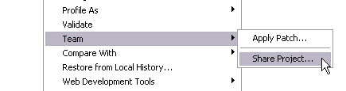
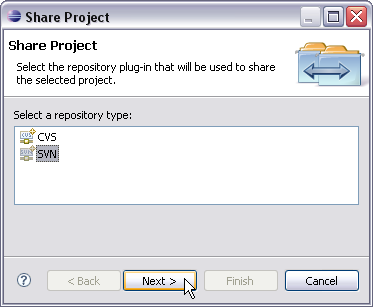
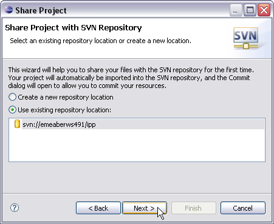
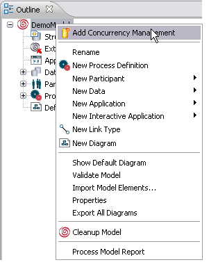
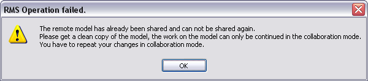
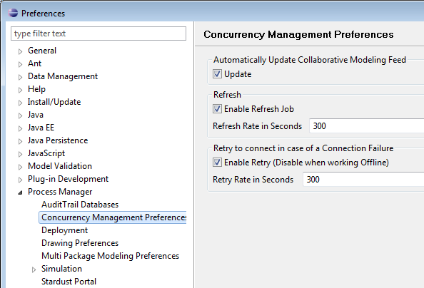
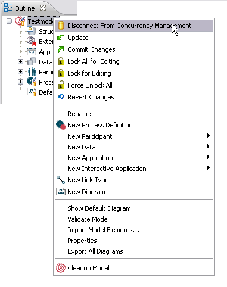

The Concurrency Control functionality is only available in case you have a project with a connection to a Subversion repository and your model is shared with this connection. To work with a shared project you either have to check out an existing project from the repository or share a local project with the repository.
You need an Subversion (SVN) repository added to your workspace to work in concurrency mode. To add an existing Subversion repository to your workspace:
For detailed information on adding an SVN connection, please refer to the Subclipse - Subversion Eclipse Plugin documentation (Workbench User Guide > Getting started > Team SVN tutorial > Creating a new Repository Location).
In case you want to use a local project for concurrency mode, you have to share this project with an SVN repository. To share a project:

Figure:


For detailed information on sharing a project, please refer to the Subclipse - Subversion Eclipse Plugin documentation (Workbench User Guide > Getting started > Team SVN tutorial > Connect an Existing Project with SVN).
To check out an existing project:
For detailed information on checking out existing projects from the repository, please refer to the Subclipse - Subversion Eclipse Plugin documentation (Workbench User Guide > Getting started > Team SVN tutorial > Checkout).
In case a new model has been checked in by another user, you can check out this model and its lock files from the repository. Synchronizing your project with the repository indicates if new models have been added. For detailed information on synchronizing with a repository, please refer to the Subclipse - Subversion Eclipse Plugin documentation (Reference > Team Menu > Team Synchronizing Perspective ).
Note
Please make sure that you use the latest version of a model element for
concurrency control, otherwise it might lead to inconsistencies.
To add concurrency control to a model, right-click the model in the Outline view and select Add Concurrency Management. With this action a commit to the repository is invoked automatically.

Figure: Add Concurrency Control.
If the model is in version management mode, the necessary lock files are created and the model state is switched to concurrency mode. In case the model is in local file mode, the model file is checked into the subversion repository.
In case a model has been shared before and changes are performed in local mode, it is not possible to share this model again. You have to check out a clean copy of the model from the repository and repeat the changes. An according warning message is opening to inform you about these necessary steps:

Figure: Warning Message for already Shared Model.
You can set the following preferences for handling the Concurrency Management Control:
To set these preferences, open the Preferences dialog:

Figure: Concurrency Management Preferences.
To exit the Concurrency Management Mode, right-click the model in the Outline view and select Disconnect From Concurrency Management:

Figure: Disconnect From Concurrency Control.
The following steps are performed automatically during a disconnect to ensure that the disconnect is not called by several users simultaneously or one after another:
For all separately lockable model elements, lock files are created in a model specific directory inside the same project. All lock files are added and committed to the version control system, when the Concurrency Management Mode is switched on. To be able to track changes, lock files are modified and committed upon changes of these model elements. A number that will be incremented on each commit of a changes of an element is stored in the according lock files.
The names of lock files look are composed as follows:
<project_root>/.MODEL_<GUID>/<element_type>/<element_type>__<element_uuid>.lck
Whereby:
Upgrading a model requires a lock on all model elements as obtained by the Lock All for Editing option. Please refer to section Locking all Lockable Elements of chapter Locking and Unlocking Elements for information on this option. For a model upgrade, the lock on all model elements is obtained implicitly.